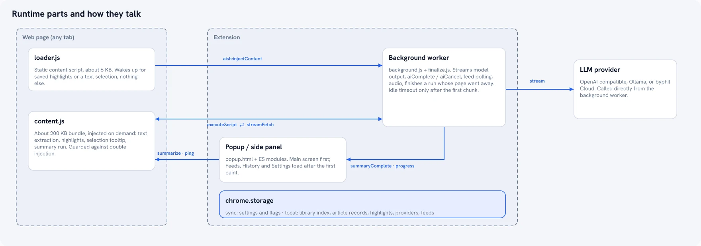

為什麼我們將搜尋、標籤與推薦功能移出雲端
搜尋、重複消除、標籤整理與內容推薦共享同一個輕量的本機索引。以下是它的運作原理，以及為什麼這絕不僅僅是個隱私噱頭。
多數標榜「AI 驅動」的瀏覽器擴充功能會把所有資料都傳送到伺服器 — 連完全與 AI 無關的部分也不例外。搜尋、標籤整理、「尋找相似項目」：這些都是存在數十年、非常成熟的技術。它們不需要大型語言模型，更絕對不需要透過網路往返請求。我們逐一檢視了 AI Summary Helper 的每一項功能，並反思：這真的需要雲端嗎？還是我們只是因為雲端架構最省事而盲目採用？
事實證明，絕大多數功能根本不需要。
我們究竟把哪些功能移到了本機
搜尋功能。 這款擴充功能最初僅比對文章標題與標籤 — 速度雖快，卻無法檢索內文。我們沒有選擇在每次按鍵輸入時暴力掃描全文，也沒有將每個查詢都傳送到伺服器，而是根據使用者儲存的文章封存庫建立了一個小型的 TF-IDF 索引。低運算成本的欄位（如標題、標籤）依然會像以前一樣瞬間完成優先比對；較長的查詢則會在索引中擴展檢索。該索引在每次工作階段僅建立一次，並採增量更新，而非每次輸入按鍵時重新掃描。
重複偵測。 在完成儲存之前，系統會執行分層檢查：首先進行標準化 URL 的完全比對（成本極低，O(1)）；接著對少數通過初篩的候選項進行標題相似度比對；最後，僅針對剩餘的極少數候選項目進行完整的 TF-IDF 餘弦相似度（Cosine Similarity）比較。多數儲存操作根本不會進入高成本層級，因為前置的低成本階段早已完成判斷。
標籤正規化。 標籤隨著時間推移往往會出現分歧 —「ML」、「Machine Learning」、「machine-learning」對人類來說意義相同，但對過濾器而言卻完全不同。我們透過小型的別名表（alias table）捕捉明顯的情況；其餘部分則透過全標籤詞彙庫的模糊編輯距離（Edit Distance）進行合併，並選取使用者最常用的拼寫作為標準格式，而不是強加一套「正確標準」給使用者。
可讀性與語氣分析。 Flesch–Kincaid 可讀性分級純粹是基於句子與音節數量的算術計算 — 完全不需要模型。情緒分析則是內建 AFINN 單字清單搭配前兩個 token 的否定詞檢查。這兩者都完全不需要離開瀏覽器。
「相關文章」與特輯（Digest）。 這兩項功能皆重複使用了搜尋功能已建置好的同一套 TF-IDF 向量。為三個獨立功能打造三套獨立的相似度系統或許很容易，但只建立一個通用索引，並讓搜尋、內容推薦與特輯整理共同讀取，不僅使整體系統保持輕巧，更意味著只要優化一次索引，就能同時提升這三項功能的表現。

我們刻意保留在雲端的部分
實際的重點摘要步驟 — 也就是真正需要語言模型的部分 — 依然需要呼叫網路。以目前本機模型的體積而言，若追求雲端頂級模型的產出品質，這是無法避免的。使用者可以在這個步驟自備 API Key（如 OpenAI、Gemini、Mistral、DeepSeek），或者將擴充功能指向本機的 Ollama 執行個體，徹底跳過網路傳輸。這是唯一沒有預設「本機運行」的地方 — 它是自由啟用的，因為這裡的取捨非常明確：本機模型的速度與品質確實不如雲端託管模型，我們也不想粉飾這一點。
為什麼這絕非只是宣傳隱私的說詞
隱私層面的考量十分真實 — 一個擁有廣泛主機權限的擴充功能，如果把本來不需要上傳的網頁內容傳送到伺服器，確實會引發信任問題，而不只是觀感問題而已。但另一個更實在的原因在於：從工程架構的角度來看，這本來就是正確的決策。TF-IDF 搜尋不需要承擔 200ms 的網路延遲；標籤重複消除也不該產生額外的 API 費用帳單。根據實際任務選擇合適的工具，而不是預設把所有事情都丟給「呼叫雲端」，往往能打造出更快、運行成本更低且離線相容性更佳的產品 — 隱私優勢只是自然而然隨之而來的紅利，而非本末倒置的初衷。
AI Summary Helper 是一款免費的 Chrome 擴充功能。
新增至 Chrome